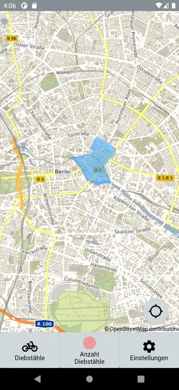
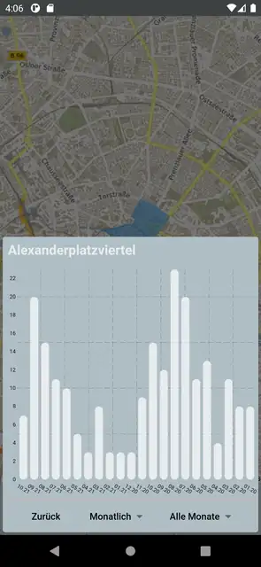

Fahrraddiebstahlwarnung
أمان وخصوصية
Berlin-bike-theft-warning is a simple application which informs the user about the number of stolen bicycles and bikeaccidents either by location or by tapping. The data is provided by Polizei Berlin and distributed by ODIS
✓ ترخيص مفتوح (GPL-3.0-only) · آخر تحديث: 2022-02-09
1.0.6الإصدار
24.1 MBالحجم
GPL-3.0-onlyالرخصة
Open in Kanzتحميل APK (24.1 MB)
Download APK
SHA-256: d5aea8401d94e7c7bf6856ca7f7cb054533b29a20d9445bf0c3a2f755b875061


امسح الكود لفتح صفحة التطبيق
Scan to open this app page
لو كنز مش متثبت عندك: نزّل متجر كنز.
Not installed? Get the Kanz store.